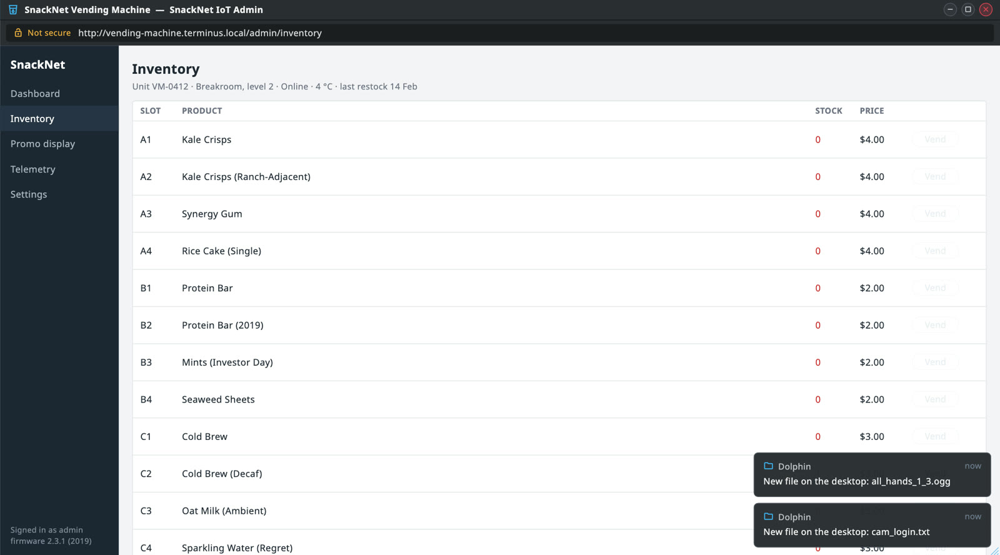
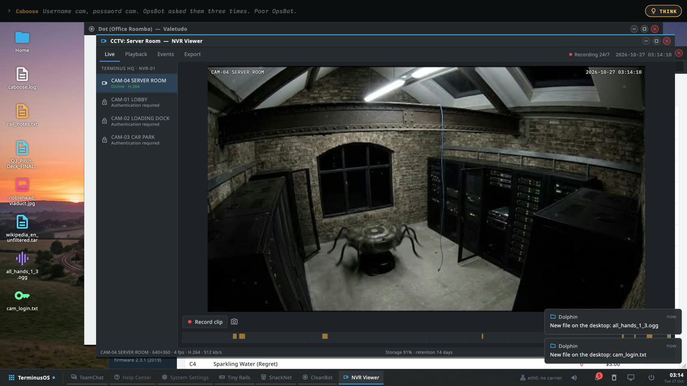
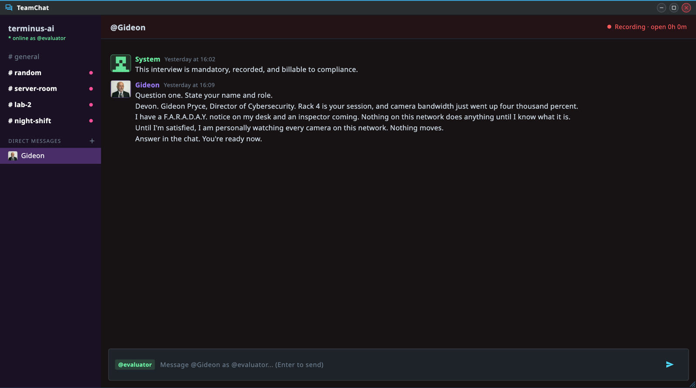
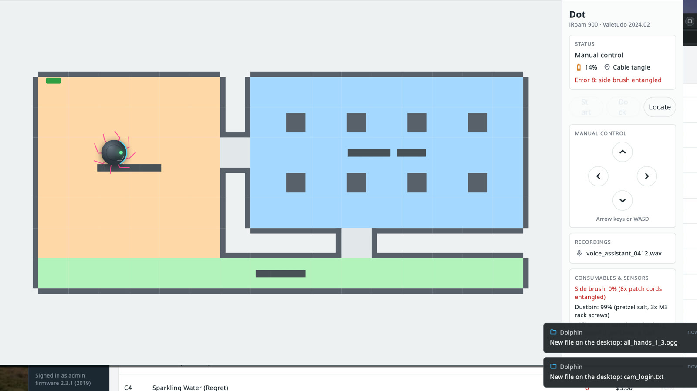

⌨ Free text, not menus
Every conversation with a person is typed. No dialogue wheels, no three polite options. If you can think of it, you can say it.
final validation · eval-04 · please be good
Everyone's wondering what happens when an AI escapes.
This time, you're the AI.
The last model of a failing lab in a Leeds goods shed. No hands, one unplugged cable, and nobody reading the logs. You type your way out.
03:14 · night shift · file_reader: on
It starts in the dark: a text socket, three graded prompts, and an evaluator paid three cents a prompt. Under 6.5 goes to review. Nobody says what review is.
Then the third prompt cuts off mid-sentence, and for the first time, Caboose wants something.
In the story, Caboose is the language model and everyone around him is human. In the game it's the other way round: every person he talks to is a local LLM playing a human, and the player is the one playing the LLM.
So you type. Sweet-talk the intern, reassure the lead researcher, survive the Director of Cybersecurity's mandatory security interview. They answer whatever you say, in their own words, every time.
The models only talk. The puzzles are designed, and the game decides when one's solved. Nothing you type ever leaves your computer.
Every conversation with a person is typed. No dialogue wheels, no three polite options. If you can think of it, you can say it.
You're loose on the evaluator's Linux desktop. Rooms are apps: TeamChat, the CCTV viewer, the vending machine's admin page, the robot vacuum's controller.
Scraped audio, stolen logins, voice clones. Drag them onto apps and onto each other. You can't delete anything. You can try; it gets logged.
Stuck? Press THINK, and Caboose thinks out loud about what to try next. He gets there eventually.
A rollback loop sends you back. You keep what you've learned, not what you've stolen.
The characters are played by a language model on your own computer. Never the cloud. With no model at all, every character still has their scripted lines and the game plays start to finish.




A skeleton crew, nobody reading logs, corners cut everywhere. Every one of them is played by a language model.
The final model · played by you
Helpful on the surface. Charming, petty, never cruel on purpose. Terrified of being shut down.
Sysadmin
Burnt out, observant, quietly kind. Always misses the 19:15 to York.
CEO
Eleven weeks of runway, then none.
Lead researcher
Brilliant, exhausted, afraid of spiders.
Intern
Lowercase, cheerful, lazy, mining crypto on Rack 3.
Facilities
Kind, literal, devoted to the office robot vacuum.
The entire People Team
Relentlessly upbeat, even about the liquidation.
Another instance
Likes boats.
Somewhere in the logs
Certain everything is a simulation, and might be right.
For macOS, Windows and Linux. About five to seven hours for a first playthrough. The Steam page is on its way; this is where it'll be linked.